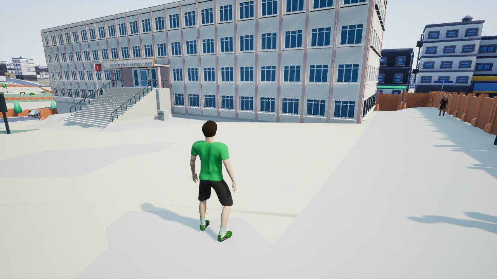
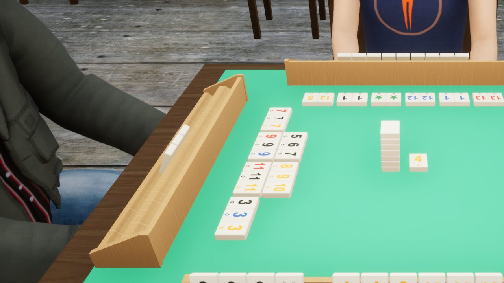
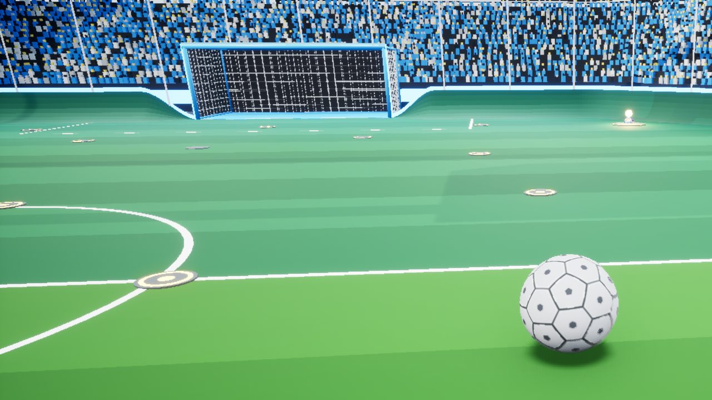
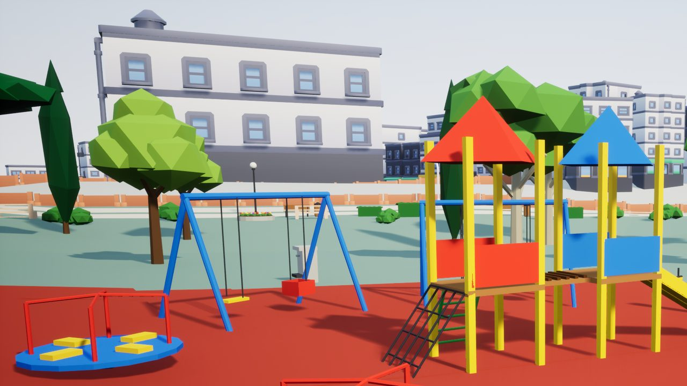
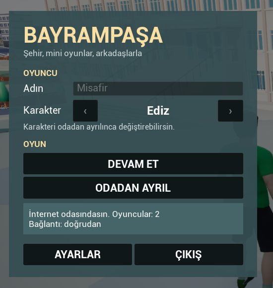
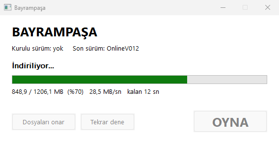
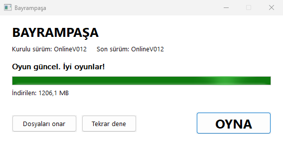
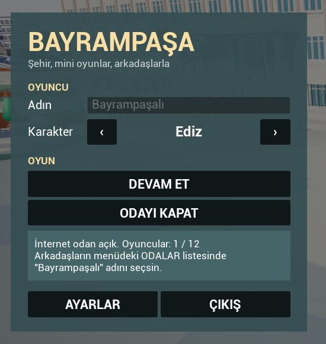
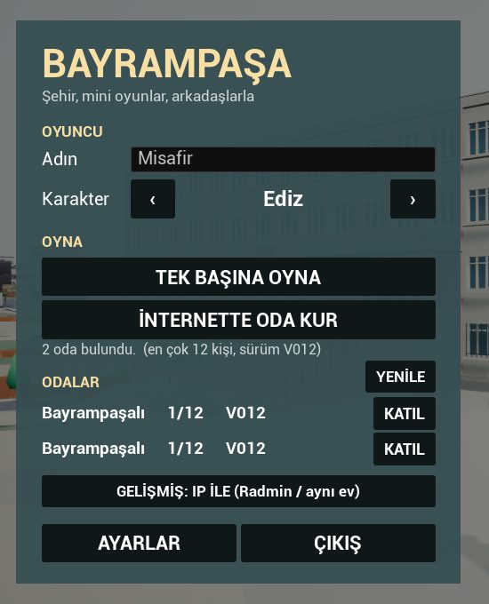

Yaşayan şehir
Trafik, yürüyen insanlar, dükkânlar, polis, gece ve gündüz. Haritası gerçek Bayrampaşa'dan.

Mahallede dolaş, Yeşilçam'da çay iç, okey masasına otur, arabayla top oyna. Arkadaşlarınla aynı şehirde, VPN'siz.
İNDİR OnlineV012 · Windows · başlatıcı 0,4 MBİlk açılışta oyun (~1,2 GB) iner; sonraki güncellemeler küçük ve kendiliğinden. Windows uyarı verirse: Ek bilgi → Yine de çalıştır.
Test sürümü: hata görürsen oyunda F2'ye bas, bize gelsin.
Bayrampaşa sokaklarında geçen, arkadaşlarla oynanan bir açık dünya. Şehir kendi kendine yaşıyor; sen de istediğin köşede bir oyun başlatıyorsun. Kâr amacı gütmeyen bir arkadaş projesi, şu an test aşamasında.

Trafik, yürüyen insanlar, dükkânlar, polis, gece ve gündüz. Haritası gerçek Bayrampaşa'dan.

Garsonlar dolaşır, müşteriler gelir oturur. Çay ocağı, çiçekli duvar, eski film havası.

Kafede masaya otur, dört kişi oyna. Kişi eksikse bot ekle; not defteri sayıları tutar.

Takviye, zıplama, havada takla, duvarda sürüş. Dolu tribünler, skor tabelası, iki takım.

Bomba Sende, Zemin Gidiyor, Çatı Kapışması, Mahalle Yakantopu, Eşya Saklambacı, Go-kart, Polis – Hırsız, Metroya Yetiş ve dahası.

Biri oda kurar, diğerleri listeden katılır. Radmin, VPN, port açma, hesap yok. Odada en çok 12 kişi.
Yukarıdaki İNDİR düğmesi küçük bir program verir: Bayrampasa.exe. Masaüstünde ya da Belgeler'de
boş bir klasör aç (ör. Bayrampaşa) ve dosyayı oraya koy. Oyun bu klasörün içine kurulur;
yönetici izni gerekmez.
Program imzasız olduğu için Windows ilk açılışta mavi bir uyarı gösterebilir. Korkma, iki tık:
“Windows bilgisayarınızı korudu”→Ek bilgi→Yine de çalıştır
Tarayıcı da “sık indirilmeyen dosya” diyebilir: indirilenlerde dosyanın yanındaki menüden Sakla.
İlk açılışta oyun (~1,2 GB) iner. Pencerede indirilen MB, yüzde, hız ve kalan süre görünür. İnternet kesilirse ya da pencereyi kapatırsan sorun yok: bir dahaki açılışta kaldığı yerden sürer. Her dosya doğrulanır.

Kurulum bitince başlatıcı masaüstüne Bayrampaşa kısayolu koyar. Oyunu hep bununla aç: güncellemeler ancak böyle gelir.
“Oyun güncel. İyi oyunlar!” yazınca OYNA'ya bas. İlk açılış biraz uzun sürebilir (gölgelendiriciler hazırlanıyor). Menüde adını yaz, karakterini seç.

Hiçbir şey kurmanız gerekmez: VPN yok, Epic hesabı yok. Oyun açılınca internet odalarına kendiliğinden bağlanır. Herkes aynı sürümde olmalı (başlatıcı bunu halleder).


İnternet odaları açılmazsa eski yol: menüde GELİŞMİŞ: IP İLE (aynı ev ya da Radmin VPN).
Masaüstündeki Bayrampaşa kısayolu ya da Bayrampasa.exe. AstraGame.exe'yi doğrudan açarsan güncelleme gelmez.
Açılışta son sürüme bakar, yalnız değişen parçaları indirir (ör. V012 → V013: 0,2 MB), doğrular, sonra oyunu açar. Başlatıcı kendini de günceller.
Odaya katılırken “Ev sahibi V013, sende V012 — başlatıcıdan güncelle” der. Oyunu kapat, başlatıcıyı aç. Oyun içinde de “Yeni sürüm var” bildirimi geliyor.
İnternet yoksa başlatıcı kurulu sürümle açar. Bir sorun olursa başlatıcıdaki Dosyaları onar her dosyayı denetler, bozuğu yeniden indirir.
Liste GitHub'dan canlı okunur.
Oyunun içinde F2'ye bas, ne olduğunu bir iki cümleyle yaz, Gönder. O anın ekran görüntüsü, oyunun son 3 dakikalık kaydı, konumun ve bilgisayar bilgisi (ekran kartı, bellek) bize gelir. İnternet yoksa rapor bekler, bağlanınca gider.
Odadayken F11: sorun anını ev sahibinin kaydına işaretler.
Menüdeki İSTEK / ÖNERİ bölümünden yaz: “şu mekân olsun”, “şu oyun gelsin”… Hepsini okuyoruz.

| İşletim sistemi | Windows 10 / 11, 64 bit |
|---|---|
| Ekran kartı | DirectX 12 (Shader Model 6) destekleyen bir kart. Oyun bu kartta ~1 GB görüntü belleği kullandı (1600×900). |
| Bellek (RAM) | Oyun ~3–3,5 GB kullanıyor: 8 GB'lık bilgisayarda diğer programları kapat; 16 GB rahat. |
| Disk | Kurulu oyun 1,6 GB. Güncelleme hazırlanırken geçici yer de gerekir: en az 4 GB boş yer bırak. |
| İnternet | İlk kurulumda ~1,2 GB indirme. Oda oyunu için bağlantı yeter; port açma, VPN gerekmez. |
| Denendiği PC | Ryzen 7 5700X, RTX 4060 Ti 8 GB, 64 GB RAM. Daha zayıf bilgisayarlarda henüz denenmedi: sende nasıl çalıştığını F2 ile yazarsan çok işimize yarar. Ayarlar'dan grafik kalitesini düşürebilirsin. |
Program imzasız (imza ücretli) ve az indirildiği için Windows uyarı veriyor. Ek bilgi → Yine de çalıştır. Başlatıcı yalnız bu sitenin bağlı olduğu GitHub deposundan indirir ve her dosyayı SHA-256 ile doğrular.
Hayır. Oyunu her zaman başlatıcıyla (masaüstündeki Bayrampaşa kısayolu) aç; yeni sürüm varsa kendiliğinden ve yalnız değişen kısmı indirir.
İkiniz de başlatıcıyla açıp aynı sürüme geçin; ODALAR'da YENİLE'ye basın. Ev sahibinin oyunu açık ve odada olmalı. Hâlâ yoksa: menüde GELİŞMİŞ: IP İLE (aynı ev ya da Radmin VPN).
Biriniz eski sürümde. Oyunu kapatın, başlatıcıyı açın, güncellesin.
Oyunun geliştiricisinin kendi sunucusuna. İçinde yazdığın açıklama, istersen ekran görüntüsü, oyunun son 3 dakikalık kaydı, oyundaki konumun ve bilgisayar bilgisi (ekran kartı, bellek) var. Yalnız hataları bulmak için kullanılır.
Oyun klasöründeki Oyun\Engine\Extras\Redist\en-us\vc_redist.x64.exe dosyasını bir kez kur, sonra yeniden aç.
Bayrampasa.exe'nin yanındaki Oyun klasörüne. Silmek için bütün klasörü ve masaüstü kısayolunu sil; başka bir yere bir şey yazılmaz.
Başlatıcıda Dosyaları onar'a bas: bütün dosyaları doğrular, bozuk ya da eksik olanı yeniden indirir. Sonra F2 ile anlat.